物理图像与定义
电荷噪声（charge noise）指器件中随机涨落的电势 作用在量子点上，使点内电化学势、双点失谐（detuning）以及由此派生的一切比特参数发生随时间的漂移。它不是某一种具体的微观机制，而是”所有把随机电场送到量子点位置上的过程”的统称。
工程上更方便的做法是把它折算成能量涨落 ：栅极电压涨落 经杠杆臂（lever arm） 转换为点内能量涨落
之所以要折算，是因为不同器件的隧穿率、 各不相同，只有能量涨落才是可以横向比较的”器件噪声性能”指标。掺杂 GaAs 门控量子点上实测的典型值是数 ，工艺优化后可压到亚 。
电荷噪声的关键特征是低频主导：其涨落的特征时间尺度在毫秒量级，功率谱密度在实验可及的频段近似正比于 。这决定了它的两个实验后果——单次测量之间的稳定图会跳变、工作点会漂移；以及自由感应衰减（Ramsey）比自旋回波衰减得快得多。
微观起源
学界至今没有完全确定 噪声的起源，但普遍认为其主要来源是随机电荷涨落：某个局域能级俘获或释放一个载流子，产生一次电势阶跃；大量具有不同特征时间的这类过程叠加，谱形自然趋近 。在门控量子点中，被反复确认的具体通道有：
- 肖特基栅极到二维电子气的漏电流。掺杂 GaAs 器件中，栅极电压涨落驱动电子从肖特基电极经掺杂层漏向二维电子气，被认为是纳米器件噪声的主要来源之一。相应的抑制思路也很直接：移除栅极下方的二维电子气（浅刻蚀），或干脆移除掺杂层（非掺杂异质结 + 顶栅积累）。
- 掺杂层中电离施主的电荷涨落。这是GaAs/AlGaAs 调制掺杂结构的固有代价，也是转向非掺杂结构的主要动机。
- 半导体–介质界面的界面缺陷。氧化层中的悬挂键在量子尺度上可视为一个二能级系统（two-level system, TLS）。这些 TLS 既向耦合系统贡献电荷噪声、限制比特相干，又能与微波谐振腔交换能量、压低品质因子。同一批缺陷还通过”表面隧穿–俘获”过程屏蔽栅压，造成阈值电压漂移与工作电流衰减，使工作点校准变得困难。
- 栅氧厚度与工艺。过厚的氧化铝会显著增加电荷噪声，因此栅氧厚度需要在绝缘可靠性与噪声之间折中——Si/SiGe 重叠栅器件中通常控制在 左右。
材料平台的差异主要体现在界面质量上：Si-MOS 的电子被限制在 Si–SiO 界面，界面质量低于外延结构，均匀性有限、电荷噪声更大；Si/SiGe 与应变锗的外延界面则把载流子推离表面缺陷，噪声环境相对干净。
噪声谱：1/f 模型
把栅极 上的电压噪声写成自相关函数的傅里叶变换
实验上常用的两种参数化形式为
前者中 是失谐参数 的噪声在 处的功率，后者把谱指数 留作可拟合量、 为参考频率。理想 对应 ；实测值通常略小于 1（例如平面锗空穴器件上拟合得到 ），仍属于典型的 型电荷噪声。CPMG 噪声谱学在 SiMOS 量子点上直接测得 2–20 kHz 段 的近 1/f 电荷噪声（白噪声底 350 rad²/s@>20 kHz），并把 3.6 kHz 尖峰溯源到直流电压源——见动力学解耦词条”实验落地”一节。
不能直接测量，但可以从回波衰减的形状反推。Hahn 回波幅度随等待时间的衰减写成
拟合出的指数 与谱指数满足 。这条关系把”波形长什么样”和”噪声谱多陡”直接联系起来，是仅凭比特实验就能读出噪声谱形的实用技巧。
Si/SiGe 的系统测量：温度与栅氧厚度依赖
Connors 等人对重叠栅 Si/SiGe 量子点做了系统的噪声谱测量：在库仑峰两侧采集电流噪声功率谱，用幂律加洛伦兹项
拟合（、、、 为拟合参数），在 1 Hz 处读出噪声幅值 与谱指数 。三块器件的 Al₂O₃ 栅氧厚度分别为 0/15/46 nm，基温下的失谐噪声为 、、——噪声随栅氧厚度单调上升，高温端尤其明显，因为更厚的氧化层把更多 TLS 缺陷放进栅–量子点电容的敏感区。
温度扫描（50 mK–1 K，细至 2–10 mK 步进）给出更细的结构：平均而言噪声近似 （）、幅值随温度近似线性增长；但点间差异强烈——单个量子点的 与 显著偏离平均行为，甚至同一量子点在输运峰两侧测得的温度依赖都不同。
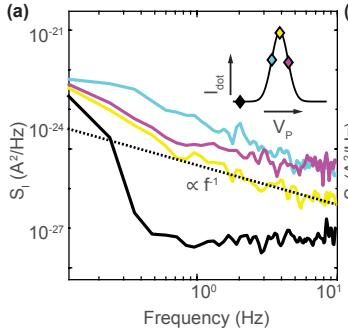
噪声谱测量：库仑峰两侧的电流噪声功率谱密度经杠杆臂换算为失谐噪声谱 ，幂律 + 洛伦兹项拟合（式见正文）在 1 Hz 处读出噪声幅值与谱指数 γ。图源：Connors et al. (2019), Fig. 2。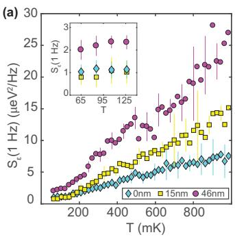
电荷噪声的温度依赖（50 mK–1 K）：三块不同栅氧厚度（0/15/46 nm）器件的平均 随温度上升，且噪声随栅氧厚度单调增大（高温端尤甚）；γ 的分布（色带为 ±1 标准差）围绕 1 但点间弥散显著。图源：Connors et al. (2019), Fig. 3。Dutta–Horn 模型解释这种偏离：单个 TLS 的谱是洛伦兹型
其中 是激活能、 是特征尝试时间（切换时间 热激活）。频率远低于 时白噪声且随温度指数下降，远高于时为 且随温度指数上升。总谱是所有 TLS 对激活能分布 的积分；McWhorter 的均匀分布给出严格 与线性温度依赖，而 Dutta–Horn 允许 非均匀：
它同时预言 与非线性温度依赖互为因果——观测到其中一个即说明 非常数。Si/SiGe 数据对两者都观测到了，且 D-H 模型用 反推的 与实测吻合良好。结论：每个量子点感受到自己的 TLS 系综（激活能分布各不相同、非均匀），点间差异由此而来——电荷噪声至少部分来自半导体表面附近非均匀分布的二能级系统。
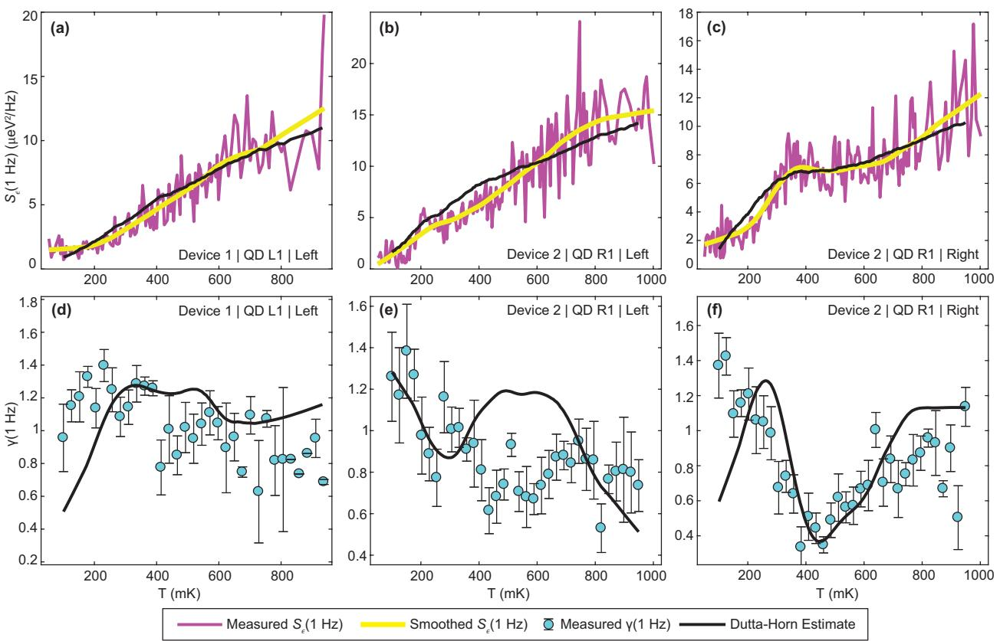
单点偏离与 Dutta–Horn 拟合：单个量子点的 温度依赖（上排，同一量子点在输运峰左/右侧不同）显著非线性，γ(T)（下排）偏离 1；黑线为 D-H 模型用 γ(T) 数据反推的 与用 反推的 γ——非均匀 TLS 分布同时解释两种偏离。图源：Connors et al. (2019), Fig. 4。界面缺陷运动的微观模型：从位移到自旋劈裂噪声（Nowak 2023）
把 1/f 电荷噪声一路追到微观源头：半导体–氧化物界面（距量子点 的平面）上的局域电荷在两个位置间随机切换（TLF），每次位移 拖动量子点的波函数、再经纵向磁场梯度 转化为 Zeeman 劈裂涨落——这就是同位素纯化 Si/SiGe 中自旋退相干的微观链条。单个缺陷对自旋劈裂的扰动 有限元计算给出两个关键不对称性： 向位移比面内位移有效约一个量级（电荷与其金属镜像构成的偶极矩在 向运动时变化最快），面内则沿梯度方向（）的导数约为 向的两倍。
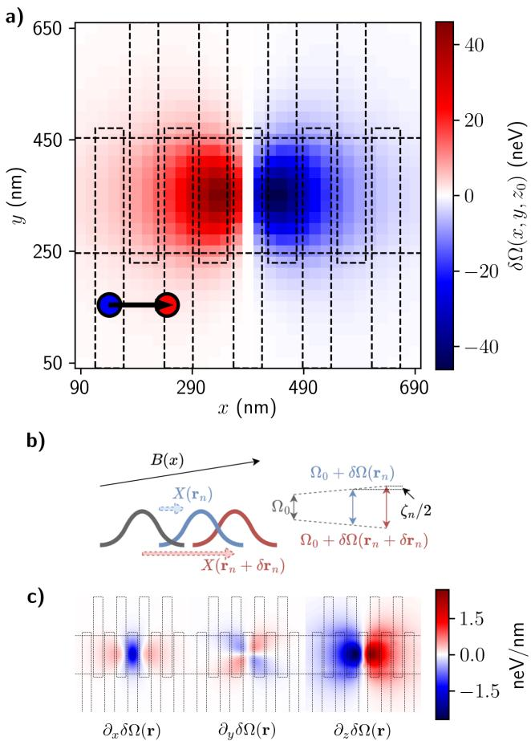
微观模型：界面处（z₀=102 nm）的一个电荷缺陷随机位移 δr 拖动量子点波函数，经纵向磁场梯度 ΔB∥ 转化为自旋劈裂的改变 δΩ(x,y,z₀)——单缺陷扰动的空间结构与梯度（决定位移方向的有效性）由有限元计算给出。图源：Nowak et al. (2023), Fig. 1。
多缺陷贡献近似可加（两电荷交叉验证误差 neV），总噪声谱为各 TLF 洛伦兹谱之和。以实验观测的噪声幅度为锚点（ neV 对应 ；0.05–0.1 neV 对应 ，），对比两种位移模型：各向同性（三维高斯位移）噪声偏大、难以同时覆盖两个实验端点；面内受限（planar，位移限制在界面平面内）幅度约低 2 倍，在 、 的合理参数区即可覆盖全部实验值，标度律为
其中 是界面缺陷面密度、 是单次位移的 rms。两模型可由跨器件 统计的方差区分（planar 模型方差更大）—— 的器件间离散本身就是模型判别数据。
关联诊断预言：同一批缺陷既驱动自旋劈裂噪声（经梯度通道）也驱动轨道/基态能量噪声（经直接库仑通道）——缺陷密度 时两类噪声之间应出现可见关联。同时测自旋劈裂噪声与轨道能量噪声（如 自旋退相干谱与电荷传感谱）并检验其关联，由此成为界面缺陷的直接探针。
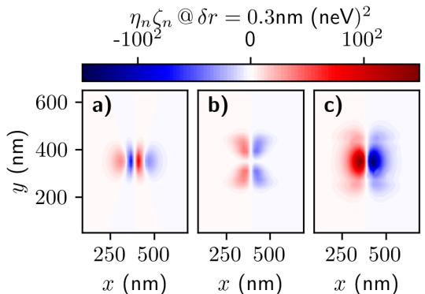
关联预言：单个缺陷对自旋（ζ）与轨道（基态能量）两个通道的耦合乘积的空间分布——缺陷位于两通道耦合乘积大的位置时，两类噪声显著关联；缺陷密度 10¹⁰ cm⁻² 下该关联应可实测。图源：Nowak et al. (2023), Fig. 4。
单体 TLF 的表征：Allan 方差与隐马尔可夫（Ye 2024a）
系综谱学（1/f 功率谱）难以回答”涨落器到底是什么”——少数几个 TLF 就足以产生平滑无特征的 1/f 谱。Ye 等人改从时域单体入手：在四量子点器件（8 nm 自然 Si 阱、交叠栅工艺、双射频电荷传感器、~10 mK）的输运峰上直接看到随机电报噪声（RTN），并用两种互补工具提取单体性质：
- Allan 方差：量化信号在时间滞后 后平均变化多少——单体 TLF 的 RTN 在 平均切换时间处出现峰，由此直接读出前向/反向跃迁率 、；
- 因子隐马尔可夫模型（FHMM）：多 TLF 混叠（不同输运峰上呈不同步高组合）时做状态解码与参数分离。
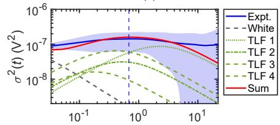
电压依赖的噪声环境：三个输运峰上的反射测量时间轨迹与电化学势涨落——第一峰呈恒定步高的单 TLF 电报噪声，第二、三峰呈多步高（多个 TLF）；切换时间对栅压的敏感依赖使同一批 TLF 在不同峰上”冻结”或”显形”。图源：Ye et al. (2024a), Fig. 2。
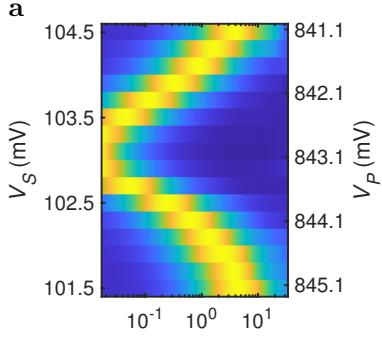
TLF 切换率的栅压依赖：Allan 方差随时间滞后与栅电压的二维图（峰位随栅压移动）——切换速率对栅压极度敏感，这是后续反馈稳定技术的物理基础。图源：Ye et al. (2024a), Fig. 3。
三条实验规律：切换时间对栅压极度敏感（同一 TLF 在邻近输运峰上被冻结或显形）；随温度升高而缩短；随传感点电流增大而加快（局部加热）。对主 TLF 的模型甄别排除纯声子辅助隧穿与纯热激活两种场景，最佳描述是双稳电荷偶极子（位于柱塞栅电极附近、被传感点电流加热）的隧穿+热激活混合翻转——隧穿不由电子-声子介导，而可能由流过传感点的 2DEG 电子介导。值得注意的是同一器件（此前在另一制冷机中）测得 1 Hz 处仅 的 1/f 谱——可分辨的单体 TLF 与低噪声水平、平滑 1/f 谱完全兼容。
反馈稳定噪声源：把 TLF 钉扎在选定态（Ye 2024b）
抑制电荷噪声通常绕开噪声源（解耦、甜点、工艺）；Ye 等人演示了直接控制噪声源的新类别：利用切换时间的敏感栅压依赖，实时监测 TLF 状态并在其翻转后改变栅压配置：
- 开环：检测到 TLF 进入”1”态后切到快调谐（切换时间短）停留固定时间，再回到慢调谐；
- 闭环：在快调谐中持续监测，待 TLF 翻回目标态”0”再返回慢调谐——期望满足 。
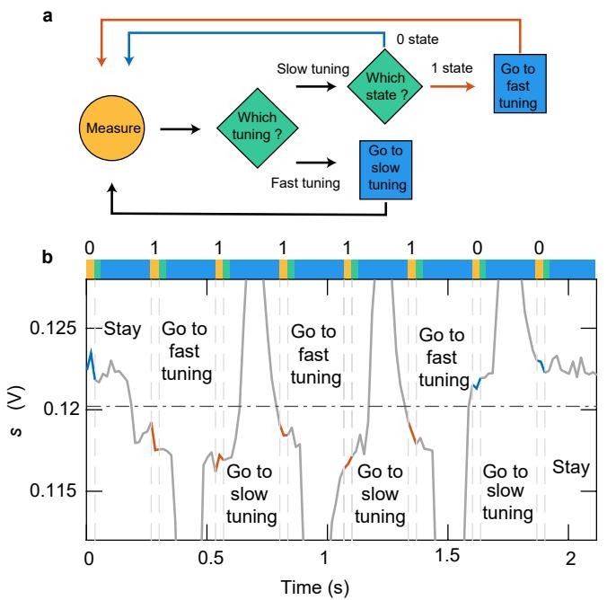
两种反馈协议：开环——检测到翻转后切快调谐固定时长再返回；闭环——在快调谐中监测直到翻回目标态。下为实测时间序列（灰迹）与分段状态判读（调谐切换的电压脉冲造成大信号偏差）。TLF 造成约 10 µeV 的化学势涨落。图源：Ye et al. (2024b), Fig. 2。
两种方法都把 TLF 的低频涨落压低近一个量级，并能把 TLF 稳定在 0 态或 1 态中的任一个；实测性能与数值模拟一致。
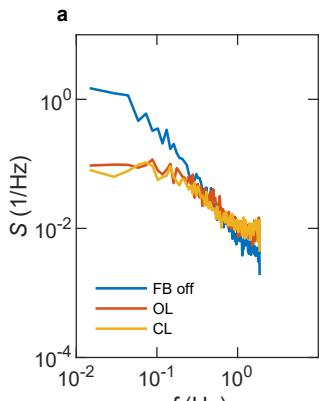
反馈对功率谱的压制：无反馈 vs 开环/闭环反馈下 TLF 时间序列的功率谱——低频分量降低近一个量级。图源：Ye et al. (2024b), Fig. 6。
噪声如何进入比特：三类耦合通道
电荷噪声本身只涨落电势。它能否伤害比特，取决于比特频率对电势的导数有多大。
电荷比特：一阶失谐耦合
电荷量子比特的最小模型是
其中 是双点失谐、 是隧穿耦合。比特频率对失谐的敏感度
在 处为零、在 处饱和到 。这就是电荷比特”在反交叉点最抗噪、远离对称点退相干最快”的定量来源，也解释了为什么电荷比特虽有最大的电偶极矩、最容易做到电荷–光子强耦合，相干时间却最短。
上述失谐耦合描述的是横向噪声通道（驱动弛豫）；高频端弛豫的定量关系由约瑟夫森电荷比特的单发读出实验直接测定：若电荷噪声引起的能量涨落谱密度为 ，弛豫率由 Fermi 黄金规则给出
其中 表征比特经电荷自由度与噪声库的耦合强度。Astafiev 等人用它判定了主导弛豫机制：实测 随 呈清晰的 依赖（ GHz 处），说明弛豫是库珀对隧穿而非双准粒子序贯隧穿；在甜点处 直接读出噪声谱的频率依赖——高频段谱密度粗略正比于比特激发能。这把电荷噪声的图景从低频 （本词条主线）延伸到高频 Ohmic 型自发发射：同一个噪声库，低频端表现为退相位与图跳变，高频端表现为弛豫。
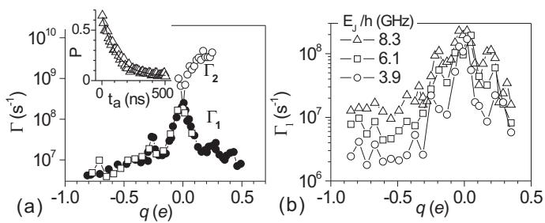
弛豫率与噪声谱的测量：(a) 器件示意图（SET 读出约瑟夫森电荷比特）；(b) 弛豫率 的测量方案——SET 置于 JQP 峰（实心圆）与阻塞区（其他符号）的对比。图源：Astafiev et al. (2004)，Fig. 1。
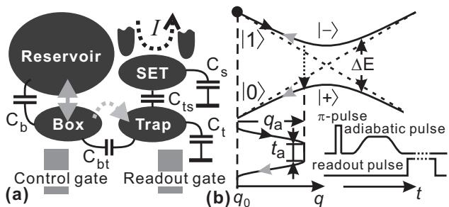
弛豫率随 与失谐的依赖：(a) 在甜点（开三角）与 GHz（开圆）随 的变化——甜点处直接给出 的频率依赖；远离甜点时 随 增大而下降、随 增长，确认电荷涨落主导。图源：Astafiev et al. (2004)，Fig. 2。
交换类比特：二阶展开与协方差
对共振交换比特这类由两个失谐参数 共同控制的比特，需要把哈密顿量展开到二阶。设电荷噪声使两个失谐各自偏移 （），均值为零、服从高斯分布，则
假设所有电荷涨落具有 谱，只保留导致退相位的纵向项，退相位率的主项为
完整表达式还含 与 的交叉项，其权重由相关系数 决定。这个形式的实用价值在于：当一阶导数被工作点设计压到零时，二阶项和交叉项就成为剩余退相干的主导，展宽随失谐的依赖曲线因此不是简单的 V 形，而是可以用上式整体拟合——拟合与实验数据吻合，即可判定电荷噪声是主导噪声源。
作为对照，同一体系中电子–声子相互作用引起的弛豫可用形变势哈密顿量与费米黄金定则估算：硅中声子贡献相对电荷噪声可忽略，而 GaAs 中电声相互作用占比相当大，不能忽略。
自旋比特：纵向自旋–电场敏感度
自旋本身不带电，电荷噪声必须”借道”才能影响它。借道方式有二：
- 自旋轨道耦合 / 张量的电压依赖。把空穴比特写成有效自旋 系统
张量显含栅压，于是拉莫尔频率 也随栅压变化。定义纵向自旋–电场敏感度（longitudinal spin–electric susceptibility, LSES）
它的大小直接反映比特对电荷噪声的敏感程度，实验上就是”比特频率随柱塞栅压的斜率”。
最大化 的面内磁场角并不沿磁体轴向，而是偏离一定角度。
在平面锗中，有效 因子的各向异性源于重空穴–轻空穴（HH–LH）混合，而混合程度又由量子点的电势分布决定，因此 与 LSES 都强烈依赖磁场取向。面内旋转磁场时
对应的自旋–电场敏感度解析近似为
退相干的滤波函数理论
把上述”敏感度 × 噪声谱”整合成相干时间，需要滤波函数（filter function）形式。栅压噪声在自由演化中累积随机相位
其中 描述脉冲序列的符号翻转。对含 个 脉冲的 CPMG 序列
为 Heaviside 阶跃函数，Hahn 回波对应 。旋转坐标系中密度矩阵非对角元的衰减为
即退相干速率 = 噪声谱与滤波函数的重叠积分。Ramsey 序列的滤波函数
在 处不衰减，因此对低频分量全盘接收；对 谱做积分会在低频端发散，须用实验时长与带宽设定截止 、，得到
脉冲把滤波函数的低频响应压掉，回波时间因而由较高频段的噪声幅度决定；取 时
两式的对比解释了实验中反复出现的现象： 常常对工作点变化不敏感（被幅度很大的低频分量钉住），而 会随敏感度 明显起伏。反过来，用不同 的 CPMG 测一组 ，再配合长时间 Ramsey 频率监测，就能反演出跨越多个数量级的噪声谱——这是动力学解耦序列作为”噪声谱仪”的用法。
最优工作点
既然伤害正比于导数，压制电荷噪声的通用策略就是把工作点放在导数为零的位置，即最优工作点（sweet spot）。三个典型例子：
- 电荷比特的对称点 ：，一阶失谐噪声被完全抑制，代价是失去了用失谐调频的手段。
- 交换门的对称操作点。交换耦合与失谐 的关系为
为点间隧穿耦合、 为充电能。 在 处取极小值、对 一阶不敏感，因此实验上不再用失谐脉冲、而是用快速电压脉冲直接抬降点间势垒来开关 ，可有效抑制电荷噪声对 的干扰。需要注意的是，正反脉冲会使两点电化学势非对称偏移，实测对称点常偏离失谐零点，需用 Hahn 回波型序列单独标定（引入虚拟栅极可缓解）。
- 空穴自旋比特的磁场取向甜点。由于 LSES 随磁场角呈抛物线型变化，选择使 最小的磁场方向即可显著抑制退相干。理论进一步指出，LSES 为零的方向在描述磁场取向的单位球面上不是孤立点，而是连成连续轨迹（“最优操控线”，sweet lines），且轨迹位置可由栅压调控——这为在多比特阵列中寻找共同最优磁场配置提供了可能。
代价是普遍存在的：“操控速度–相干时间”权衡。强自旋轨道耦合是一把双刃剑：它带来超快全电学操控，也放大自旋–电场敏感度。实验上确实看到 与 随磁场角呈相反趋势，使品质因子 不再有单调规律。
参数与量级
| 量 | 典型值 | 来源 |
|---|---|---|
| 能量涨落 （传统掺杂 GaAs 单点） | ||
| 能量涨落 （浅刻蚀 GaAs 单点） | ||
| 能量涨落 （非掺杂 GaAs 单点） | – | |
| 杠杆臂 （用于 ） | （浅刻蚀）/ （传统） | |
| 噪声谱指数 | （由 反推） | |
| 电荷涨落特征时间尺度 | 毫秒量级（低频主导） | |
| 比特频率抖动（55 h Ramsey 监测） | 近似高斯分布， | |
| 内禀失谐噪声幅度 | （由 估算），拟合取 | |
| 平面锗空穴比特 | ，随面内磁场角近似不变 | |
| 平面锗空穴比特 | Q1 ；Q2 | |
| 甜点处单比特门保真度增益 | ，最高 | |
| RX 比特退相干率 | ||
| Si-MOS 微磁体器件 / | / | 楚宁 2025 |
| 电流噪声积分频段 | –（浅刻蚀）；–（非掺杂） | |
| 温度依赖 | ，峰顶电流涨落上升约 | |
| Si/SiGe 失谐噪声（基温，1 Hz） | 0.84 / 0.93 / 1.77 µeV/√Hz（栅氧 0 / 15 / 46 nm Al₂O₃） | Connors 2019 |
| Si/SiGe 噪声温度依赖 | 平均近似线性、随栅氧厚度单调上升（50 mK–1 K） | Connors 2019 |
| 自旋劈裂噪声锚点 | neV（）；0.05–0.1 neV（）， mT/nm | Nowak 2023 |
| 界面缺陷模型参数 | planar 位移模型： cm⁻²、 nm 覆盖实验区间； 向位移比面内有效 ~10× | Nowak 2023 |
实验测量方法
输运法：库仑峰上的电流噪声
这是把电荷噪声折算成能量的经典方案，四个步骤：
- 定标。先测库仑菱形提取杠杆臂 。
- 测谱。把量子点调到库仑阻塞区（避开能量量子化的影响），源极加直流偏压（如 ，用直流而非交流以排除激励信号干扰），漏极电流经前置放大器转成电压后送入频谱仪，得到电流噪声谱 。在库仑峰的峰底（阻塞区）、斜率最大处、峰顶三个位置分别取谱：峰底零电流处测到的实际上是隧穿几率涨落 引起的噪声，可作为本底。
- 积分。对低频段积分得到电流涨落
为系统噪声本底。 4. 换算。，再乘 得 。
一个重要的自洽性判据： 沿库仑峰扫描应出现两个峰，与微分电导 的两个峰一一对应，即电流噪声正比于微分电导——这说明噪声确实来自栅极电压涨落，而不是别的机制。峰顶附近 会让 发散，这几个点必须舍弃。
比特谱学法
- 与多脉冲解耦时间之比。 越大，说明噪声越集中在低频；配合 CPMG 阶数扫描可重构噪声谱。
- 回波衰减指数。拟合 得 ，直接给出谱形。
- 长时间频率监测。固定等待时间做 Ramsey，连续数十小时跟踪共振频率漂移，得到极低频端（ 量级）的谱点。
- LSES 扫描。三段式（Empty–Load–Readout）脉冲中改变 Load 阶段的柱塞栅压，测比特频率随 的线性斜率，即 ；不同栅极给出的 LSES 可正可负，符号反映波函数在该栅极作用下是被拉伸还是被压缩。
- 腔谱线宽。在cQED 构型中，用双色调制谱提取比特展宽随失谐的依赖关系，再用上文的二阶电荷噪声模型整体拟合。
需要强调：不同方法测到的噪声投影不完全相同。输运法测的是量子点自身能量涨落，比特谱学法测的是”噪声谱 × 该比特敏感度 × 该序列滤波函数”的加权积分。此外，比特模型往往只包含能施加快速脉冲的柱塞栅极，势垒栅极相关的噪声通道容易被遗漏——这正是数值模拟能复现 却低估 各向异性的原因之一。
抑制手段
| 层次 | 手段 | 效果 |
|---|---|---|
| 材料 | 移除掺杂层（非掺杂异质结 + 顶栅积累） | GaAs 单点能量涨落降至 – |
| 工艺 | 浅刻蚀移除栅极下方二维电子气，切断漏电流通道 | 相对传统结构降低约一个数量级 |
| 工艺 | 界面钝化处理、控制栅氧厚度 | 降低界面态密度与 TLS 参与度 |
| 工作点 | 电荷比特对称点、交换门对称操作点、磁场取向甜点 | 消去一阶敏感度 |
| 波形 | 势垒脉冲代替失谐脉冲控制 | 抑制电荷噪声对 的干扰 |
| 序列 | Hahn 回波 / CPMG 动力学解耦 | 滤除低频分量， 可提升数倍至数十倍 |
| 反馈 | 单体 TLF 的开环/闭环稳定（栅压快/慢调谐切换） | 低频噪声功率谱降低近一个量级，可钉扎任一态（Ye 2024b） |
| 器件设计 | 优化微磁体几何、优化腔电场分布远离缺陷区 | 减小纵向梯度、降低缺陷耦合 |
与其他概念的关系
- 电荷噪声直接移动电化学势，因此电荷稳定图中的跃迁线会随时间漂移、库仑阻塞峰会跳变，这也是自动调控必须处理的稳定性问题。
- 它是电荷比特相干时间的主要限制因素；对单自旋比特和空穴自旋比特，则经 因子、自旋轨道耦合或微磁体梯度间接作用。
- 通过交换作用 ，电荷噪声成为单重态–三重态比特、共振交换比特和杂化比特两比特门误差的来源。
- 界面缺陷既是电荷噪声的微观载体，也是高阻抗谐振腔内损耗的来源，二者需一起优化才能满足强耦合判据。
- 测量层面，QPC 电荷传感与射频反射测量既是探测电荷噪声的工具，其自身工作点也受电荷噪声漂移影响。
- 在翻转模式比特与自旋–光子耦合中，比特被有意置于电荷–自旋混合区以增大偶极矩，代价正是更强的电荷噪声敏感性。
参考文献
- Nowak, B., Cywiński, Ł. Correlations of spin splitting and orbital fluctuations due to 1/f charge noise in the Si/SiGe quantum dot. Applied Physics Letters 122, 242001 (2023). DOI: 10.1063/5.0156358；arXiv:2305.06011（QAtlas 缓存：2305.06011）。
- 电荷噪声对门保真度的影响与对策：Burkard et al., RMP 95, 025003 (2023)、Hendrickx et al., Nat. Mater. 23, 920 (2024)。
- Connors, E. J., Nelson, J., Qiao, H., Edge, L. F., Nichol, J. M. Low-frequency charge noise in Si/SiGe quantum dots. Physical Review B 100, 165305 (2019). DOI: 10.1103/PhysRevB.100.165305；arXiv:1907.07549（QAtlas 缓存：1907.07549）。
- Ye, F., Ellaboudy, A., Albrecht, D., Vudatha, R., et al. Characterization of individual charge fluctuators in Si/SiGe quantum dots. Physical Review B 110, 235305 (2024). DOI: 10.1103/PhysRevB.110.235305；arXiv:2401.14541（QAtlas 缓存：2401.14541）。
- Ye, F., Ellaboudy, A., Nichol, J. M. Stabilizing an individual charge fluctuator in a Si/SiGe quantum dot. Physical Review Applied 23, 044063 (2025). DOI: 10.1103/PhysRevApplied.23.044063；arXiv:2407.05439（QAtlas 缓存：2407.05439）。
完整文献库（含各篇站内全文页）见 参考文献库。